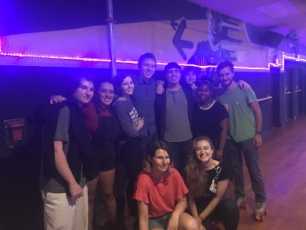
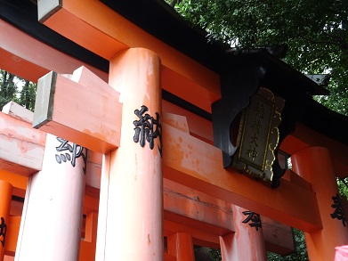

.jpg)

.jpg)
First game jam: Cienna, Anthony, Kate Michael, Matteus, Becca and Maged
.png)
First game jam: Melody of Memories
Hi. I go by Becca, she/her pronouns. I'm a game developer in Boston finishing my degree at Northeastern University. I'm Social Chair for NU Game Dev Club and a co-faciliator for Ace Space, an aro/ace affinity group at the LGTBQA+ Resource Center.What's your favorite project that you've worked on?
My favorite project that I've worked on is Sleepy Jeoff. It was the first digital game that I programmed, so it's got a special place in my heart, and I learned a lot about combining objects and components in Unity. I got to work with some incredible artists and a sound-designer-superhero too. David made us an amazing trailer!What are some of your favorite games and why?
One of my favorite games is Sony's Marvel Spiderman. I haven't had a chane to play the game myself yet (saving up for a console) but the movement feels good just by watching videos. I think being able to convey that feeling to a stranger is amazing. There's also an incredible technical postmortem given at GDC by Insomniac Games that introduced me to a lot of game optimization techniques I didn't know about before.What are your favorite game genres to make? To play?
Making games? Probably puzzle, stealth, and storytelling genres. Right now I'm working on a visual novel, a 3D low-poly puzzle experience, and a 2D stealth survival game. I like making things that encourage exploration and thinking with new perspectives.
Playing games? I love tabletop and digital RPGs. I like the interaction of systems and self expression. My Steam store recommends are filled with indie, story rich, and choices matter tags. Recently I started playing Battle Chef Brigade because I wanted to explore how the game integrates fighting game elements with match-3 strategies.What do you do at NU Game Dev Club?
As the Social Chair, my job is to communicate with other clubs and orgs and keep track of cool dev events happening in the Greater Boston area. I kick off each club meeting with updates about Boston dev meetups and interesting workshops our members might be interested in. Collectively, the e-board leaders also host a Global Game Jam site at the University and run tutorials on development tools on the weekends.Does game development consume your life?
Nope! It may feel that way sometimes, but I spend a lot of time with friends. I live with my partner and two roommates, but it often feels like there's more people living with us. Our friends all get together after work to share cooking responsibilities and do an activity. It's often painting, hair dye, watching movies or playing games.Do you have any hobbies besides games?
I think I'd be pretty intense if I didn't have other hobbies. I love animation. I watch a lot of animated films, cartoons, and Japanese anime. I also bake, care for my army of plants, and read comics. I have an e-reader on my phone that I use to check out books from the Boston Public Library, and I'm working on a cosplay with one of my roommates.Is there anything else you'd like people to know?
I have a younger brother. I love cats. I have been studying Japanese for two years, and went on a 6 week immersion program in Tokyo and Kyoto in the summer of 2018. It was the first time I ever left the US. I grew up in suburban Massachusetts and would love to see more of the world. I am open to relocating for work.
.jpg)
Team Jeoff: Jack, Becca, Greg, Broderick, David, and Liam

The Plant Army

Becca and friends at roller skating

伏見稲荷大社 Trip to Japan 2018